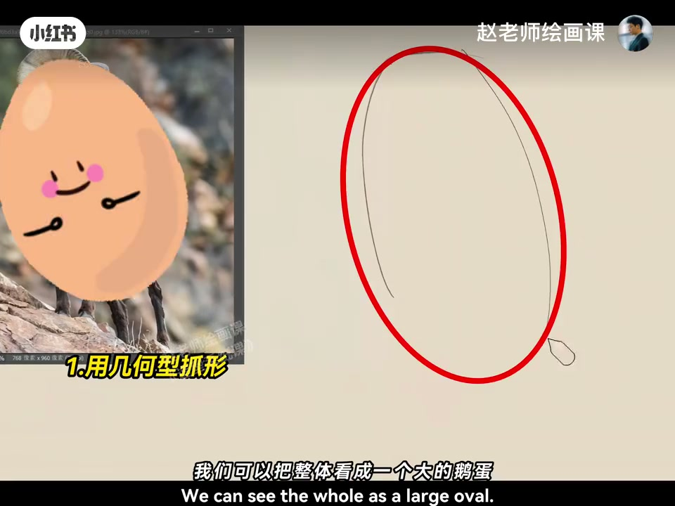
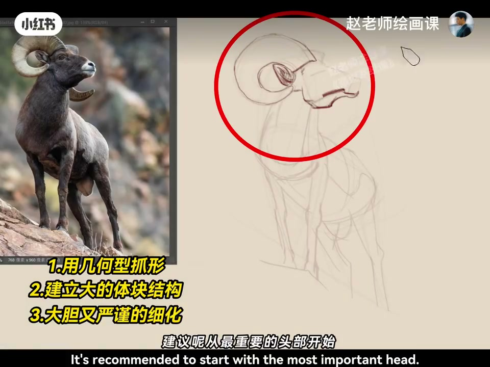
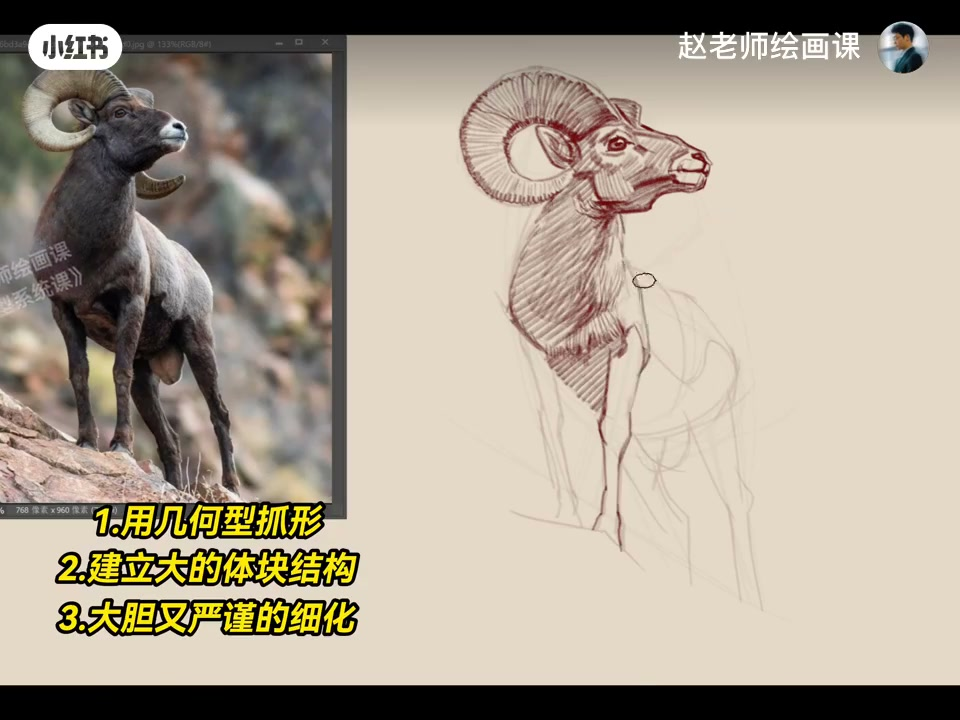
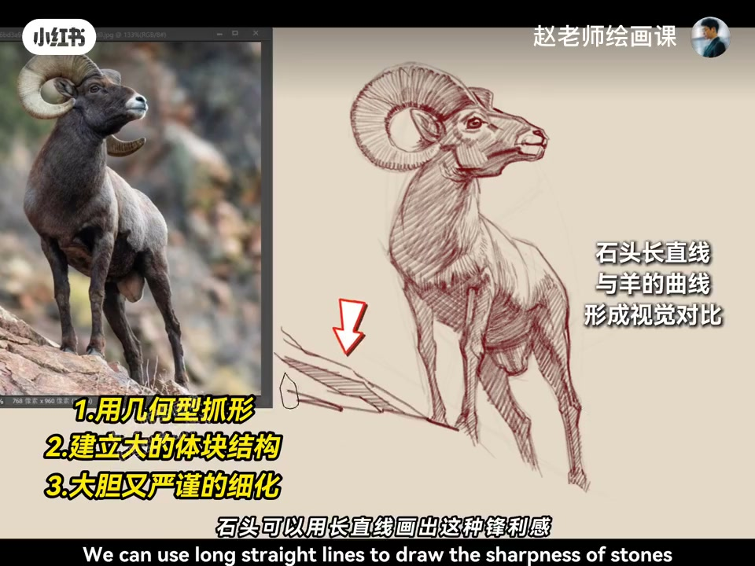

内容要点
一定要先从最精彩的地方画起，因为刚开始感受最敏锐。山羊速写：整体看成大鹅蛋，再找出内部大几何形，把头、脖子和躯干体块交代出来；基本形体建好再开心细画。建议从最重要的头部开始——刚开始注意力最集中、对形体最敏感。羊角顺着纹路用笔并记得厚度；紧紧抓住明暗交界线的丰富变化，体积感就轻松拿捏。两腿有前后关系勿画平均；石头用长直线出丰富感，与羊形成有趣视觉对比；最后给高光几笔收亮。
知识结构
鹅蛋＋几何形＋头颈躯干体块。
头部优先；交界线；前后腿；石对比。
动物速写也是感受窗口期：先大形体块，再从最重要的头部落笔——别一上来平均铺全身。
00:00-00:40鹅蛋与体块建立
片头提醒：一定要先从最精彩的地方画起，因为刚开始我们的感受是最敏锐的。Hello，今天示范山羊速写：可以把整体看成一个大的鹅蛋，接着找出内部的大几何形，把头、脖子和躯干的体块交代出来。
基本形体已经建立好，就可以开心细画了。00:12 鹅蛋起形。

00:40-01:21头部优先到石羊对比
建议从最重要的头部开始，因为刚开始注意力最集中、对形体最敏感。夸张又好看的羊角可以顺着纹路用笔，看起来很生动，同时别忘了它的厚度。
要紧紧抓住明暗交界线的丰富变化，体积感就会轻松拿捏；两只腿有前后关系，注意不要画平均。石头可以用长直线画出丰富感，和羊形成有趣视觉对比；最后给高光部分来几笔，亮色就顺利完成。00:35／01:00／01:10。



完整转录（25段）
以下文本由 Whisper medium 模型自动转录，可能存在少量识别误差，已尽可能修正。
一定要先从最精彩的地方划起
因为刚开始我们的感受是最敏锐的
Hello 大家好
今天我们来示范一个山羊的速写练习
我们可以把整体看成一个大的鹅蛋
接着找出内部的大的几何斤
把头部 脖子和躯干的体块要交代出来
基本的形体已经建立好
就可以开心的细划了
建议从最重要的头部开始
因为刚开始的时候
我们的注意力是最集中
对形体是最敏感的
这个夸张又好看的羊脚
我们可以顺着纹路来用笔
就会看起来很生动
同时别忘了它的厚度
要紧紧的抓住明暗交界线的丰富的变化
体积感就会轻松的拿捏
两只腿是有前后关系的
注意不要画平均了
石头可以用长直线画出这种丰富感
和羊可以形成一种有趣的视觉对比
最后我们给高光的部分来几笔
亮色就顺利完成了